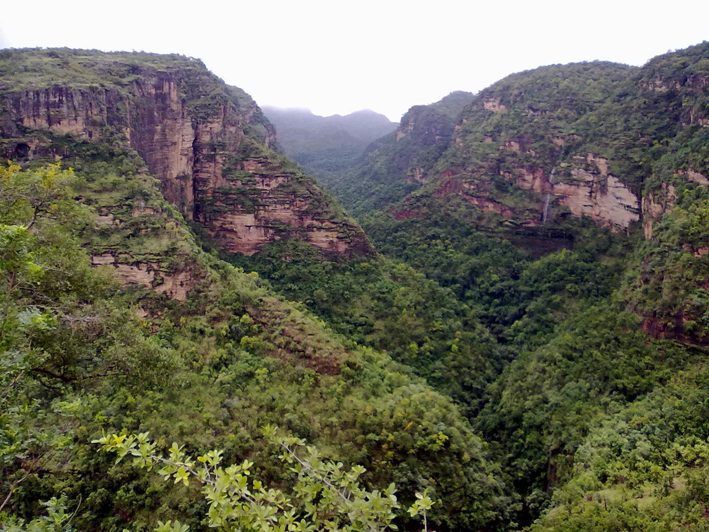
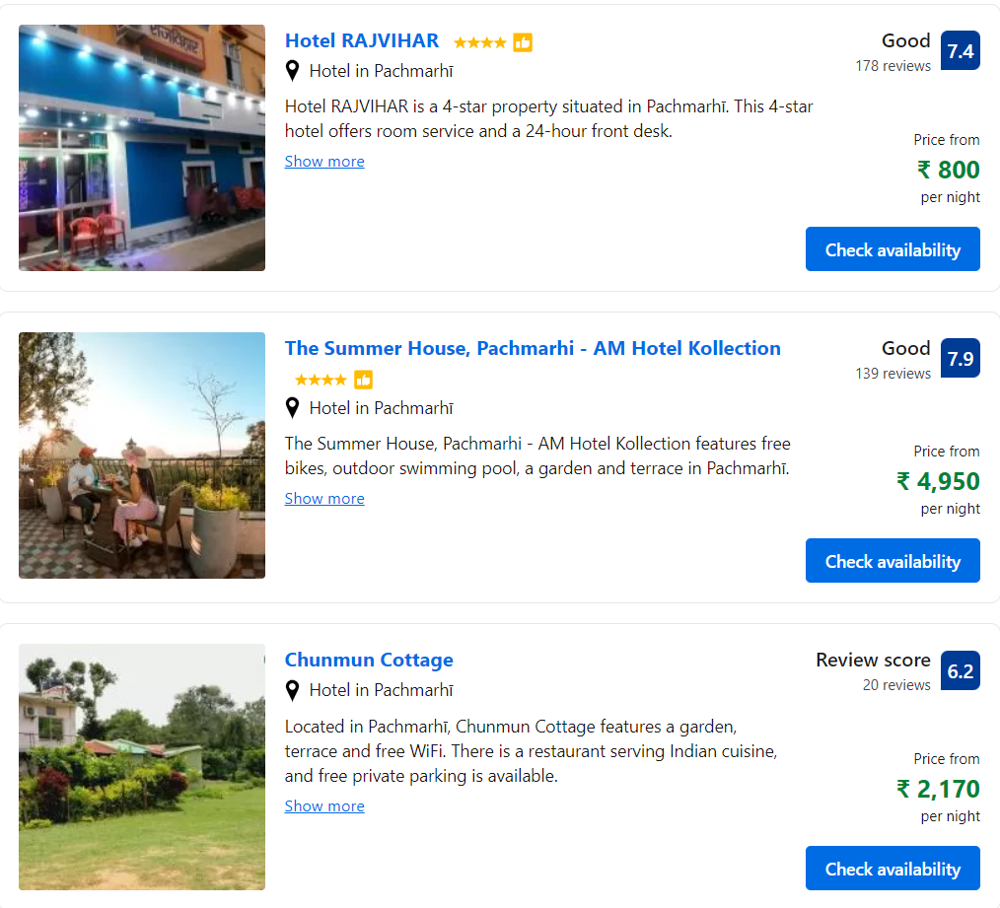
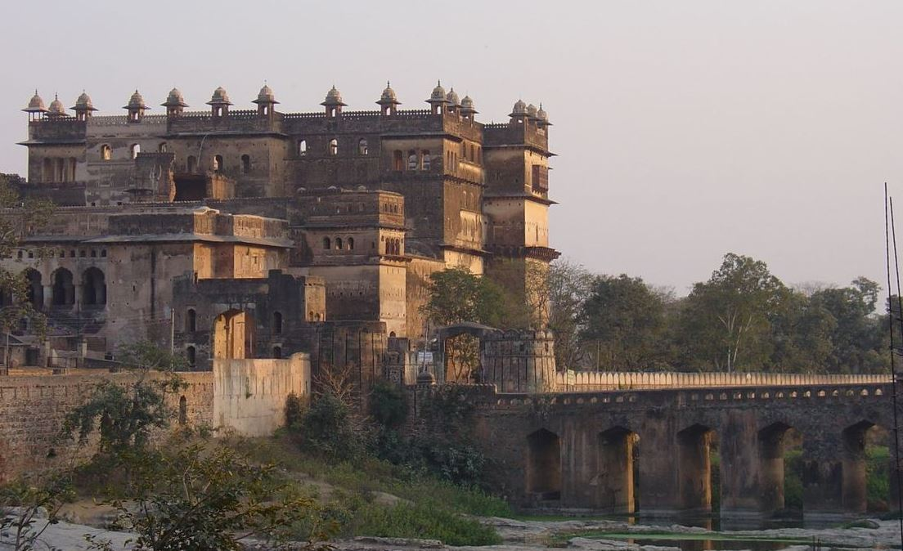

MADHYA PRADESH
1.PANCHMARHI

Pachmarhi is a hill station in the Narmadapuram district of Madhya Pradesh state of central India. It has been the location of a cantonment (Pachmarhi Cantonment) since British Raj.
It is widely known as Satpura ki Rani ("Queen of Satpura"), situated at the height of 1067 m in a valley of the Satpura Range in the Narmadapuram district. Dhupgarh, the highest point (1,352 m) in Madhya Pradesh and the Satpura range, is located here. It is a part of the Satpura Biosphere Reserve. It is also famous for the Satpura Tiger Reserve, Satpura National Park, Lord Shiva and the Pandavas of Mahabharata.
HOTELS

HOW TO REACH
By Air:
The nearest airport to reach Pachmarhi is in Bhopal, which is around 195 km away from this hill station. There are regular flights from Bhopal that connect it from cities like Delhi, Gwalior, Mumbai, etc. One can easily get a taxi or bus from the airport to reach Pachmarhi
By Railway:
The nearest airport is at Pipariya, which is an adjacent railhead, located at a distance of 47 km from Pachmarhi. It connects to main Indian railway lines like Mumbai's Mahanagari Exp, Kolkata Mail, Chennai's Gangakaveri Exp, and Bangalore's Sangha Mitra Exp. One can book a cab from this railway head to reach their desired location in Pachmarhi
By Road:
There are frequent bus services from Pachmarhi to Bhopal, Pipariya, and Chhindwara. The route through road is convenient if you are travelling on your own via car.
2.ORCHHA

Orchha is a town, near city of Niwari in Niwari district of Madhya Pradesh state, India. The town was established by rajput ruler Rudra Pratap Singh some time after 1501, as the seat of an eponymous former princely state of covering parts of central & north India, in the Bundelkhand region.Orchha lies on the Betwa River, 80 km from Tikamgarh & 15 km from Jhansi in Uttar Pradesh.
HOTELS

HOW TO REACH
By Air:
There is no direct flight connectivity to Orchha. The nearest airport is in Gwalior, some 140 away from the same.
By Railway:
Orchha has its own railway station, but the nearest major railway station is at Jhansi (15 km). Travelling from Jhansi to Orchha can be done in two way- you can either take an auto-rickshaw or go for a more expensive but comfortable cab.
By Road:
There is no direct road connectivity to Orchha. Jhansi is the nearest bus stop, 16 km away from the same.